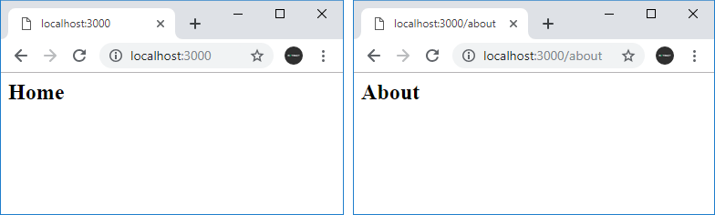

Создание сервера стр. 3
Маршрутизация
По умолчанию Node.js не имеет встроенной системы маршрутизации. Обычно она реализуется с помощью специальных фреймворках типа Express, о котором речь пойдет в следующей главе. Однако если необходимо разграничить простейшую обработку пары-тройки маршрутов, то вполне можно использовать для этого свойство url объекта Request. Например:
http.createServer(function(request,
response){
response.setHeader("Content-Type", "text/html;
charset=utf-8;");
if(request.url === "/home" ||
request.url === "/"){
response.write(" Home");
} else
if(request.url == "/about"){
response.write("About");
}
else if(request.url ==
"/contact"){
response.write("Contacts");
}
else{
response.write(" Not found");
}
response.end();
}).listen(3000)
В данном случае обрабатываются три маршрута. Если идет обрашение к корню сайта или по адресу localhost:3000/home, то пользователю выводится строка "Home". Ели обращение идет по адресу localhost:3000/about, то пользователю в браузере отображается строка About и так далее. Если запрошенный адрес не соответствует ни одному маршруту, то выводится заговлок "Not Found".

Переадресация
Переадресация предполагает отправку
статусного кода 301 (постоянная переадресация) или 302 (временная переадресация)
и заголовка Location, который указывает на новый адрес. Например, выполним
переадресацию с адреса localhost:3000/ на адрес localhost:3000/newpage
const
http = require("http");
http.createServer(function(request, response){
response.setHeader("Content-Type",
"text/html; charset=utf-8;");
if(request.url === "/"){
response.statusCode =
302; // временная переадресация
// на адрес
localhost:3000/newpage
response.setHeader("Location", "/newpage");
} else if(request.url ==
"/newpage"){
response.write("New address");
}
else{
response.statusCode =
404; // адрес не найден
response.write("Not Found");
}
response.end();
Назад: создание сервера стр.2 | Далее: создание сервера стр.4